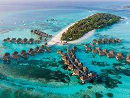

Dario Argento (Roma, 7 de septiembre de 1940) es un director, productor, editor y guionista de cine italiano. Con una trayectoria de más de cincuenta años, su obra se desenvuelve principalmente en los géneros del giallo y el terror sobrenatural, y a menudo es reconocido como el «maestro del terror italiano» y como el responsable de popularizar el giallo a nivel internacional. Debido a su contenido violento, muchos de sus filmes han sido objeto de censura o prohibidos en algunos países. Hijo de un productor cinematográfico y de una fotógrafa profesional, estuvo vinculado a las artes desde su niñez. A comienzos de su carrera se desempeñó como redactor en diversos diarios, y más adelante trabajó como guionista para cineastas como Sergio Leone, Franco Prosperi, Tonino Cervi, Alfio Caltabiano y Armando Crispino, en géneros como el wéstern, el cine erótico y el cine bélico. De este periodo en particular destaca su colaboración con Leone en el filme C'era una volta il West (1968).
La invasión rusa de Ucranianota 3 es un episodio bélico en curso a gran escala que empezó el 24 de febrero de 2022 y forma parte de la guerra ruso-ucraniana, comenzada en 2014 tras los sucesos del Euromaidán de finales del año anterior. Se trata del mayor ataque militar convencional en suelo europeo desde las guerras yugoslavas.nota 4 Está generando miles de víctimas mortales, así como la mayor crisis de refugiados en el continente desde la Segunda Guerra Mundial,8 más de 7,2 millones de ucranianos han abandonado el país, y más de 7,1 millones se han desplazado internamente.98La guerra ha causado la muerte de más de 7000 civiles, según las Naciones Unidas (enero de 2023).10 La invasión estuvo precedida por una concentración militar rusa en las fronteras de Ucrania, que se inició a mediados de 2021.11 Durante este periodo de tensión diplomática, Putin criticó la ampliación de la OTAN posterior a 1997, y los funcionarios rusos negaron repetidamente, desde mediados de noviembre de 2021 hasta el 20 de febrero de 2022, que Rusia tuviera planes de invadir Ucrania.1213 No obstante, el 21 de febrero siguiente, Rusia reconoció a la República Popular de Donetsk y a la República Popular de Lugansk, dos estados autoproclamados en la región de Dombás en el este de Ucrania, y envió tropas a esos territorios. Al día siguiente, el Consejo de la Federación de Rusia autorizó por unanimidad a Putin a utilizar la fuerza militar fuera de las fronteras de Rusia.14 Alrededor de las 05:00 MSK (UTC+3) del 24 de febrero, Putin anunció una «operación militar especial» en el territorio de Donetsk y Lugansk;15 los misiles comenzaron a impactar en varios lugares de Ucrania, incluida la capital, Kiev —el servicio fronterizo ucraniano dijo que fueron atacados sus puestos fronterizos con Rusia y Bielorrusia—.16 Dos horas más tarde, las fuerzas terrestres rusas entraron en el país dando inicio a diferentes ofensivas que a partir de abril pasaron a concentrarse en el este del país. Así, entre el 18 y el 19 de abril —tras la retirada rusa en la ofensiva de Ucrania central—, ambas partes confirmaron que había comenzado la «segunda fase» del episodio bélico a la que se refirieron como «batalla por el Dombás».17 Rusia afirmó que la operación perseguía la «liberación completa» de Donetsk y Lugansk.17 La invasión ha recibido una condena internacional generalizada en Occidente (principalmente Estados Unidos, Canadá, la Unión Europea, Reino Unido, Noruega, Australia y Japón), que ha impuesto sanciones económicas a Rusia. Otros países, como China, India y Brasil, han evitado condenar la invasión, mientras que un grupo de países del Sur Global no comparten la narrativa occidental sobre la guerra.18 En una resolución por parte de la ONU se condenó la invasión rusa con una amplia mayoría.19 Tanto antes como durante la invasión, varios de los treinta Estados miembros de la OTAN han brindado su apoyo militar a Ucrania —la organización no ha realizado una participación específica en este sentido—20 al igual que la Unión Europea cuyas medidas en respuesta a Rusia han aumentado paulatinamente.21 Por su parte, el presidente de Bielorrusia anunció en octubre la llegada a su país de los primeros soldados rusos para la fuerza militar conjunta «únicamente defensiva» que buscaba «garantizar la seguridad de su frontera».22 Desde el 28 de febrero se entablaron negociaciones de paz entre Rusia y Ucrania, pero a finales de abril se estancaron.23 Entre tanto, se han producido manifestaciones en varias ciudades del mundo en contra de los ataques rusos a Ucrania, donde pedían el fin a la guerra y la búsqueda de alternativas diplomáticas.24 Las protestas contra la guerra acaecidas en Rusia desde el estallido del conflicto dieron lugar a miles de arrestos.25 En el mes de julio, las fuerzas invasoras anunciaron haber tomado el control total sobre Lugansk.26 No obstante, la contraofensiva ucraniana recuperó parte de este territorio.
La era posterior a la Guerra Fría (actualmente llamado periodo entre-guerras frias) es el período posterior al final de la Guerra Fría el 25 de diciembre de 1991. Debido a que la Guerra Fría no fue una guerra activa sino más bien un período de tensiones geopolíticas marcadas por guerras indirectas, existe un desacuerdo sobre el final oficial de este conflicto y la subsiguiente existencia de la era posterior a la Guerra Fría. Algunos académicos afirman que la Guerra Fría terminó cuando se firmó el primer tratado mundial sobre desarme nuclear en 1987 o el fin de la Unión Soviética como superpotencia en medio de las Revoluciones de 1989, pero realmente terminó con la disolución de la Unión Soviética en 1991. A pesar de esta ambigüedad, el fin de la Guerra Fría simbolizó una victoria de la democracia y el capitalismo, dando un impulso a Estados Unidos y a las potencias mundiales emergentes, China e India. La democracia se convirtió en una forma de autovalidación colectiva para los países que esperaban ganarse el respeto internacional: cuando la democracia se consideraba un valor importante, las estructuras políticas comenzaron a adoptar ese valor. Este párrafo es un extracto de Nueva Guerra Fría.[editar] Nueva Guerra Fría, Segunda Guerra Fría o Guerra Fría 2.0 (en inglés: New Cold War, también referida como Cold War II, Cold War Redux o Cold War 2.0) son términos utilizados —como paralelismo a la Guerra Fría entre 1945 y 1991— para designar lo que se interpreta como un conflicto político, ideológico, informativo, social y militar en el siglo xxi, lo cual terminó la llamada era post-Guerra Fría. Desde esta visión, se verían las tensiones entre potencias como estructuradas dentro de grandes bloques de poder geopolíticos opuestos; en uno se encontraría Occidente y la OTAN (liderado principalmente por Estados Unidos y Reino Unido de Gran Bretaña e Irlanda del Norte , en el que la Unión Europea tendría un papel de poder blando) y el otro (Oriente) estaría formado por un lado por China y por otro lado por Rusia (partidarios del poder duro, y que podrían ocasionalmente tener intereses similares o ir por separado, según el caso). Se incluyen acciones propias de guerra híbrida (como los ciberataques) y guerras subsidiarias (como Libia, Siria, Ucrania o Irán). La rivalidad además de geopolítica también sería de carácter económico, militar, cultural y tecnológico. Antecedentes Cadena humana conmemorando el acta de Zluky, 1990. Este párrafo es un extracto de Antecedentes históricos de la guerra ruso-ucraniana.[editar] El proceso de la caída del muro de Berlín, la reunificación alemana y el colapso de los gobiernos comunistas (1989-1991) trajeron enormes cambios en los países del Bloque del Este, hasta entonces integrantes o aliados de la Unión Soviética, alterando la balanza geopolítica en Europa. Sin embargo, tras la disolución de la Unión Soviética en 1991, Ucrania y Rusia mantuvieron estrechos vínculos y el gobierno ucraniano acordó abandonar su arsenal nuclear en 1994 —mediante el Memorándum de Budapest— con la condición de que los Estados Unidos, el Reino Unido y Rusia brindaran garantías contra las amenazas a la integridad territorial o la independencia política de Ucrania.36 Cinco años más tarde, Rusia fue uno de los signatarios de la Carta para la Seguridad Europea, que «reafirmó el derecho inherente de todos y cada uno de los Estados participantes a ser libres de elegir o cambiar sus arreglos de seguridad, incluidos los tratados de alianza, a medida que evolucionan».36 Véanse también: Conflictos postsoviéticos y Estados postsoviéticos. Rusia (en ruso, Росси́я, romanización Rossíya),n. 1 conocida formalmenten. 2 como la Federación de Rusian. 1 (en ruso, Росси́йская Федера́ция, romanización Rossíyskaya Federátsiya) y también citada en ocasiones como la Federación Rusa, es un vasto país que se extiende sobre Europa del Este y Asia del Norte.n. 3 Es el país más extenso del mundo, con una superficie de 17 125 191 km²,2 equivalente a algo más de la novena parte de la tierra firme del planeta, y posee una gran variedad de relieve y de ecosistemas. Su capital es la ciudad federal de Moscú. La forma de gobierno es la república semiparlamentaria formada por ochenta y cinco sujetos federales, y es el noveno país con mayor población en el mundo al tener 145 478 097 habitantes.5 En Rusia existen once zonas horarias, desde UTC+2 hasta UTC+12.n. 4 Rusia tiene las mayores reservas de recursos energéticos y minerales del mundo aún sin explotar, y es considerada la mayor superpotencia energética. Posee las mayores reservas de recursos forestales y la cuarta parte del agua dulce sin congelar del mundo. Rusia es el país que limita con mayor número de países, un total de dieciséis,n. 5 y el que tiene las fronteras más extensas. Limita con los siguientes países (empezando por el noroeste y siguiendo el sentido antihorario): Noruega, Finlandia, Estonia, Letonia, Bielorrusia, Lituania,n. 6 Polonia,n. 6 Ucrania,n. 7 Georgia,n. 8 Azerbaiyán, Kazajistán, República Popular China, Mongolia y Corea del Norte. Tiene límites de aguas territoriales con varios de los anteriores, con Japón y con Estados Unidos (en concreto, con el estado de Alaska). Limita también con los estados de reconocimiento limitado Abjasia, Osetia del Sur y la Unión de Repúblicas Populares (Nueva Rusia). Las costas de Rusia están bañadas por el océano Glacial Ártico, el norte del océano Pacífico y mares interiores como el Báltico, el Negro y el Caspio. La historia de Rusia comienza con los pueblos eslavos orientales. Los eslavos emergieron como un grupo reconocible en Europa entre los siglos iii y viii d. C.12 El primer estado de los eslavos orientales, la Rus de Kiev, surgió en el siglo ix y en el año 988 adoptó el cristianismo ortodoxo, producto de la cristianización llevada a cabo por Cirilo y Metodio, enviados desde el Imperio bizantino. Comenzó entonces una síntesis de las culturas bizantina y eslava que definiría la rusa durante el siguiente milenio.13 Más tarde, la Rus de Kiev se desintegró en muchos pequeños estados feudales, de los cuales el más poderoso fue el Principado de Vladímir-Súzdal, que posteriormente se transformó en Principado de Moscú, el cual se convirtió en la fuerza principal en el proceso de la reunificación rusa y la lucha por la independencia contra la Horda de Oro. Moscú reunificó gradualmente los principados rusos circundantes y comenzó a dominar en el legado cultural y político de la Rus de Kiev. En el siglo xviii d. C., el país se expandió mediante la conquista, la anexión y la exploración hasta convertirse en el tercer imperio más grande de la historia, el ruso, al extenderse desde Polonia, en poniente, hasta el océano Pacífico y Alaska, en el este. Rusia ha tenido poder y mucha influencia en el mundo: primero, en la época del Imperio ruso; después, como el país dominante de la Unión Soviética (URSS), el primero y el más grande de los estado socialistas constitucionalmente establecidos y una superpotencia reconocida como tal; y, actualmente, como la Federación de Rusia. Tiene una larga tradición de calidad en todos los aspectos de las artes y de las ciencias.12 La Federación de Rusia se fundó en 1991, al disolverse la Unión Soviética, y es reconocida como la heredera de la personalidad legal de esta.14 Su economía tiene uno de los mayores crecimientos del mundo. Es el octavo país por PIB nominal y el sexto por PIB (PPA), con el tercer presupuesto militar más grande del mundo. Es uno de los cinco países con armas nucleares reconocidos, posee el mayor arsenal de armas de destrucción masiva del mundo, tiene el segundo ejército más poderoso del mundo y el cuarto país con gasto militar más alto.15 Rusia es miembro permanente del Consejo de Seguridad de Naciones Unidas, miembro del G20, del APEC y de la OCS, y tiene mucha influencia en los países que fueron repúblicas soviéticas, y aún más en los países miembros Comunidad de Estados Independientes (CEI). Rusia también alberga el noveno mayor número de sitios nombrados por la Unesco como Rusia (en ruso, Росси́я, romanización Rossíya),n. 1 conocida formalmenten. 2 como la Federación de Rusian. 1 (en ruso, Росси́йская Федера́ция, romanización Rossíyskaya Federátsiya) y también citada en ocasiones como la Federación Rusa, es un vasto país que se extiende sobre Europa del Este y Asia del Norte.n. 3 Es el país más extenso del mundo, con una superficie de 17 125 191 km²,2 equivalente a algo más de la novena parte de la tierra firme del planeta, y posee una gran variedad de relieve y de ecosistemas. Su capital es la ciudad federal de Moscú. La forma de gobierno es la república semiparlamentaria formada por ochenta y cinco sujetos federales, y es el noveno país con mayor población en el mundo al tener 145 478 097 habitantes.5 En Rusia existen once zonas horarias, desde UTC+2 hasta UTC+12.n. 4 Rusia tiene las mayores reservas de recursos energéticos y minerales del mundo aún sin explotar, y es considerada la mayor superpotencia energética. Posee las mayores reservas de recursos forestales y la cuarta parte del agua dulce sin congelar del mundo. Rusia es el país que limita con mayor número de países, un total de dieciséis,n. 5 y el que tiene las fronteras más extensas. Limita con los siguientes países (empezando por el noroeste y siguiendo el sentido antihorario): Noruega, Finlandia, Estonia, Letonia, Bielorrusia, Lituania,n. 6 Polonia,n. 6 Ucrania,n. 7 Georgia,n. 8 Azerbaiyán, Kazajistán, República Popular China, Mongolia y Corea del Norte. Tiene límites de aguas territoriales con varios de los anteriores, con Japón y con Estados Unidos (en concreto, con el estado de Alaska). Limita también con los estados de reconocimiento limitado Abjasia, Osetia del Sur y la Unión de Repúblicas Populares (Nueva Rusia). Las costas de Rusia están bañadas por el océano Glacial Ártico, el norte del océano Pacífico y mares interiores como el Báltico, el Negro y el Caspio. La historia de Rusia comienza con los pueblos eslavos orientales. Los eslavos emergieron como un grupo reconocible en Europa entre los siglos iii y viii d. C.12 El primer estado de los eslavos orientales, la Rus de Kiev, surgió en el siglo ix y en el año 988 adoptó el cristianismo ortodoxo, producto de la cristianización llevada a cabo por Cirilo y Metodio, enviados desde el Imperio bizantino. Comenzó entonces una síntesis de las culturas bizantina y eslava que definiría la rusa durante el siguiente milenio.13 Más tarde, la Rus de Kiev se desintegró en muchos pequeños estados feudales, de los cuales el más poderoso fue el Principado de Vladímir-Súzdal, que posteriormente se transformó en Principado de Moscú, el cual se convirtió en la fuerza principal en el proceso de la reunificación rusa y la lucha por la independencia contra la Horda de Oro. Moscú reunificó gradualmente los principados rusos circundantes y comenzó a dominar en el legado cultural y político de la Rus de Kiev. En el siglo xviii d. C., el país se expandió mediante la conquista, la anexión y la exploración hasta convertirse en el tercer imperio más grande de la historia, el ruso, al extenderse desde Polonia, en poniente, hasta el océano Pacífico y Alaska, en el este. Rusia ha tenido poder y mucha influencia en el mundo: primero, en la época del Imperio ruso; después, como el país dominante de la Unión Soviética (URSS), el primero y el más grande de los estado socialistas constitucionalmente establecidos y una superpotencia reconocida como tal; y, actualmente, como la Federación de Rusia. Tiene una larga tradición de calidad en todos los aspectos de las artes y de las ciencias.12 La Federación de Rusia se fundó en 1991, al disolverse la Unión Soviética, y es reconocida como la heredera de la personalidad legal de esta.14 Su economía tiene uno de los mayores crecimientos del mundo. Es el octavo país por PIB nominal y el sexto por PIB (PPA), con el tercer presupuesto militar más grande del mundo. Es uno de los cinco países con armas nucleares reconocidos, posee el mayor arsenal de armas de destrucción masiva del mundo, tiene el segundo ejército más poderoso del mundo y el cuarto país con gasto militar más alto.15 Rusia es miembro permanente del Consejo de Seguridad de Naciones Unidas, miembro del G20, del APEC y de la OCS, y tiene mucha influencia en los países que fueron repúblicas soviéticas, y aún más en los países miembros Comunidad de Estados Independientes (CEI). Rusia también alberga el noveno mayor número de sitios nombrados por la Unesco como Rusia (en ruso, Росси́я, romanización Rossíya),n. 1 conocida formalmenten. 2 como la Federación de Rusian. 1 (en ruso, Росси́йская Федера́ция, romanización Rossíyskaya Federátsiya) y también citada en ocasiones como la Federación Rusa, es un vasto país que se extiende sobre Europa del Este y Asia del Norte.n. 3 Es el país más extenso del mundo, con una superficie de 17 125 191 km²,2 equivalente a algo más de la novena parte de la tierra firme del planeta, y posee una gran variedad de relieve y de ecosistemas. Su capital es la ciudad federal de Moscú. La forma de gobierno es la república semiparlamentaria formada por ochenta y cinco sujetos federales, y es el noveno país con mayor población en el mundo al tener 145 478 097 habitantes.5 En Rusia existen once zonas horarias, desde UTC+2 hasta UTC+12.n. 4 Rusia tiene las mayores reservas de recursos energéticos y minerales del mundo aún sin explotar, y es considerada la mayor superpotencia energética. Posee las mayores reservas de recursos forestales y la cuarta parte del agua dulce sin congelar del mundo. Rusia es el país que limita con mayor número de países, un total de dieciséis,n. 5 y el que tiene las fronteras más extensas. Limita con los siguientes países (empezando por el noroeste y siguiendo el sentido antihorario): Noruega, Finlandia, Estonia, Letonia, Bielorrusia, Lituania,n. 6 Polonia,n. 6 Ucrania,n. 7 Georgia,n. 8 Azerbaiyán, Kazajistán, República Popular China, Mongolia y Corea del Norte. Tiene límites de aguas territoriales con varios de los anteriores, con Japón y con Estados Unidos (en concreto, con el estado de Alaska). Limita también con los estados de reconocimiento limitado Abjasia, Osetia del Sur y la Unión de Repúblicas Populares (Nueva Rusia). Las costas de Rusia están bañadas por el océano Glacial Ártico, el norte del océano Pacífico y mares interiores como el Báltico, el Negro y el Caspio. La historia de Rusia comienza con los pueblos eslavos orientales. Los eslavos emergieron como un grupo reconocible en Europa entre los siglos iii y viii d. C.12 El primer estado de los eslavos orientales, la Rus de Kiev, surgió en el siglo ix y en el año 988 adoptó el cristianismo ortodoxo, producto de la cristianización llevada a cabo por Cirilo y Metodio, enviados desde el Imperio bizantino. Comenzó entonces una síntesis de las culturas bizantina y eslava que definiría la rusa durante el siguiente milenio.13 Más tarde, la Rus de Kiev se desintegró en muchos pequeños estados feudales, de los cuales el más poderoso fue el Principado de Vladímir-Súzdal, que posteriormente se transformó en Principado de Moscú, el cual se convirtió en la fuerza principal en el proceso de la reunificación rusa y la lucha por la independencia contra la Horda de Oro. Moscú reunificó gradualmente los principados rusos circundantes y comenzó a dominar en el legado cultural y político de la Rus de Kiev. En el siglo xviii d. C., el país se expandió mediante la conquista, la anexión y la exploración hasta convertirse en el tercer imperio más grande de la historia, el ruso, al extenderse desde Polonia, en poniente, hasta el océano Pacífico y Alaska, en el este. Rusia ha tenido poder y mucha influencia en el mundo: primero, en la época del Imperio ruso; después, como el país dominante de la Unión Soviética (URSS), el primero y el más grande de los estado socialistas constitucionalmente establecidos y una superpotencia reconocida como tal; y, actualmente, como la Federación de Rusia. Tiene una larga tradición de calidad en todos los aspectos de las artes y de las ciencias.12 La Federación de Rusia se fundó en 1991, al disolverse la Unión Soviética, y es reconocida como la heredera de la personalidad legal de esta.14 Su economía tiene uno de los mayores crecimientos del mundo. Es el octavo país por PIB nominal y el sexto por PIB (PPA), con el tercer presupuesto militar más grande del mundo. Es uno de los cinco países con armas nucleares reconocidos, posee el mayor arsenal de armas de destrucción masiva del mundo, tiene el segundo ejército más poderoso del mundo y el cuarto país con gasto militar más alto.15 Rusia es miembro permanente del Consejo de Seguridad de Naciones Unidas, miembro del G20, del APEC y de la OCS, y tiene mucha influencia en los países que fueron repúblicas soviéticas, y aún más en los países miembros Comunidad de Estados Independientes (CEI). Rusia también alberga el noveno mayor número de sitios nombrados por la Unesco comoRusia (en ruso, Росси́я, romanización Rossíya),n. 1 conocida formalmenten. 2 como la Federación de Rusian. 1 (en ruso, Росси́йская Федера́ция, romanización Rossíyskaya Federátsiya) y también citada en ocasiones como la Federación Rusa, es un vasto país que se extiende sobre Europa del Este y Asia del Norte.n. 3 Es el país más extenso del mundo, con una superficie de 17 125 191 km²,2 equivalente a algo más de la novena parte de la tierra firme del planeta, y posee una gran variedad de relieve y de ecosistemas. Su capital es la ciudad federal de Moscú. La forma de gobierno es la república semiparlamentaria formada por ochenta y cinco sujetos federales, y es el noveno país con mayor población en el mundo al tener 145 478 097 habitantes.5 En Rusia existen once zonas horarias, desde UTC+2 hasta UTC+12.n. 4 Rusia tiene las mayores reservas de recursos energéticos y minerales del mundo aún sin explotar, y es considerada la mayor superpotencia energética. Posee las mayores reservas de recursos forestales y la cuarta parte del agua dulce sin congelar del mundo. Rusia es el país que limita con mayor número de países, un total de dieciséis,n. 5 y el que tiene las fronteras más extensas. Limita con los siguientes países (empezando por el noroeste y siguiendo el sentido antihorario): Noruega, Finlandia, Estonia, Letonia, Bielorrusia, Lituania,n. 6 Polonia,n. 6 Ucrania,n. 7 Georgia,n. 8 Azerbaiyán, Kazajistán, República Popular China, Mongolia y Corea del Norte. Tiene límites de aguas territoriales con varios de los anteriores, con Japón y con Estados Unidos (en concreto, con el estado de Alaska). Limita también con los estados de reconocimiento limitado Abjasia, Osetia del Sur y la Unión de Repúblicas Populares (Nueva Rusia). Las costas de Rusia están bañadas por el océano Glacial Ártico, el norte del océano Pacífico y mares interiores como el Báltico, el Negro y el Caspio. La historia de Rusia comienza con los pueblos eslavos orientales. Los eslavos emergieron como un grupo reconocible en Europa entre los siglos iii y viii d. C.12 El primer estado de los eslavos orientales, la Rus de Kiev, surgió en el siglo ix y en el año 988 adoptó el cristianismo ortodoxo, producto de la cristianización llevada a cabo por Cirilo y Metodio, enviados desde el Imperio bizantino. Comenzó entonces una síntesis de las culturas bizantina y eslava que definiría la rusa durante el siguiente milenio.13 Más tarde, la Rus de Kiev se desintegró en muchos pequeños estados feudales, de los cuales el más poderoso fue el Principado de Vladímir-Súzdal, que posteriormente se transformó en Principado de Moscú, el cual se convirtió en la fuerza principal en el proceso de la reunificación rusa y la lucha por la independencia contra la Horda de Oro. Moscú reunificó gradualmente los principados rusos circundantes y comenzó a dominar en el legado cultural y político de la Rus de Kiev. En el siglo xviii d. C., el país se expandió mediante la conquista, la anexión y la exploración hasta convertirse en el tercer imperio más grande de la historia, el ruso, al extenderse desde Polonia, en poniente, hasta el océano Pacífico y Alaska, en el este. Rusia ha tenido poder y mucha influencia en el mundo: primero, en la época del Imperio ruso; después, como el país dominante de la Unión Soviética (URSS), el primero y el más grande de los estado socialistas constitucionalmente establecidos y una superpotencia reconocida como tal; y, actualmente, como la Federación de Rusia. Tiene una larga tradición de calidad en todos los aspectos de las artes y de las ciencias.12 La Federación de Rusia se fundó en 1991, al disolverse la Unión Soviética, y es reconocida como la heredera de la personalidad legal de esta.14 Su economía tiene uno de los mayores crecimientos del mundo. Es el octavo país por PIB nominal y el sexto por PIB (PPA), con el tercer presupuesto militar más grande del mundo. Es uno de los cinco países con armas nucleares reconocidos, posee el mayor arsenal de armas de destrucción masiva del mundo, tiene el segundo ejército más poderoso del mundo y el cuarto país con gasto militar más alto.15 Rusia es miembro permanente del Consejo de Seguridad de Naciones Unidas, miembro del G20, del APEC y de la OCS, y tiene mucha influencia en los países que fueron repúblicas soviéticas, y aún más en los países miembros Comunidad de Estados Independientes (CEI). Rusia también alberga el noveno mayor número de sitios nombrados por la Unesco comoRusia (en ruso, Росси́я, romanización Rossíya),n. 1 conocida formalmenten. 2 como la Federación de Rusian. 1 (en ruso, Росси́йская Федера́ция, romanización Rossíyskaya Federátsiya) y también citada en ocasiones como la Federación Rusa, es un vasto país que se extiende sobre Europa del Este y Asia del Norte.n. 3 Es el país más extenso del mundo, con una superficie de 17 125 191 km²,2 equivalente a algo más de la novena parte de la tierra firme del planeta, y posee una gran variedad de relieve y de ecosistemas. Su capital es la ciudad federal de Moscú. La forma de gobierno es la república semiparlamentaria formada por ochenta y cinco sujetos federales, y es el noveno país con mayor población en el mundo al tener 145 478 097 habitantes.5 En Rusia existen once zonas horarias, desde UTC+2 hasta UTC+12.n. 4 Rusia tiene las mayores reservas de recursos energéticos y minerales del mundo aún sin explotar, y es considerada la mayor superpotencia energética. Posee las mayores reservas de recursos forestales y la cuarta parte del agua dulce sin congelar del mundo. Rusia es el país que limita con mayor número de países, un total de dieciséis,n. 5 y el que tiene las fronteras más extensas. Limita con los siguientes países (empezando por el noroeste y siguiendo el sentido antihorario): Noruega, Finlandia, Estonia, Letonia, Bielorrusia, Lituania,n. 6 Polonia,n. 6 Ucrania,n. 7 Georgia,n. 8 Azerbaiyán, Kazajistán, República Popular China, Mongolia y Corea del Norte. Tiene límites de aguas territoriales con varios de los anteriores, con Japón y con Estados Unidos (en concreto, con el estado de Alaska). Limita también con los estados de reconocimiento limitado Abjasia, Osetia del Sur y la Unión de Repúblicas Populares (Nueva Rusia). Las costas de Rusia están bañadas por el océano Glacial Ártico, el norte del océano Pacífico y mares interiores como el Báltico, el Negro y el Caspio. La historia de Rusia comienza con los pueblos eslavos orientales. Los eslavos emergieron como un grupo reconocible en Europa entre los siglos iii y viii d. C.12 El primer estado de los eslavos orientales, la Rus de Kiev, surgió en el siglo ix y en el año 988 adoptó el cristianismo ortodoxo, producto de la cristianización llevada a cabo por Cirilo y Metodio, enviados desde el Imperio bizantino. Comenzó entonces una síntesis de las culturas bizantina y eslava que definiría la rusa durante el siguiente milenio.13 Más tarde, la Rus de Kiev se desintegró en muchos pequeños estados feudales, de los cuales el más poderoso fue el Principado de Vladímir-Súzdal, que posteriormente se transformó en Principado de Moscú, el cual se convirtió en la fuerza principal en el proceso de la reunificación rusa y la lucha por la independencia contra la Horda de Oro. Moscú reunificó gradualmente los principados rusos circundantes y comenzó a dominar en el legado cultural y político de la Rus de Kiev. En el siglo xviii d. C., el país se expandió mediante la conquista, la anexión y la exploración hasta convertirse en el tercer imperio más grande de la historia, el ruso, al extenderse desde Polonia, en poniente, hasta el océano Pacífico y Alaska, en el este. Rusia ha tenido poder y mucha influencia en el mundo: primero, en la época del Imperio ruso; después, como el país dominante de la Unión Soviética (URSS), el primero y el más grande de los estado socialistas constitucionalmente establecidos y una superpotencia reconocida como tal; y, actualmente, como la Federación de Rusia. Tiene una larga tradición de calidad en todos los aspectos de las artes y de las ciencias.12 La Federación de Rusia se fundó en 1991, al disolverse la Unión Soviética, y es reconocida como la heredera de la personalidad legal de esta.14 Su economía tiene uno de los mayores crecimientos del mundo. Es el octavo país por PIB nominal y el sexto por PIB (PPA), con el tercer presupuesto militar más grande del mundo. Es uno de los cinco países con armas nucleares reconocidos, posee el mayor arsenal de armas de destrucción masiva del mundo, tiene el segundo ejército más poderoso del mundo y el cuarto país con gasto militar más alto.15 Rusia es miembro permanente del Consejo de Seguridad de Naciones Unidas, miembro del G20, del APEC y de la OCS, y tiene mucha influencia en los países que fueron repúblicas soviéticas, y aún más en los países miembros Comunidad de Estados Independientes (CEI). Rusia también alberga el noveno mayor número de sitios nombrados por la Unesco comoRusia (en ruso, Росси́я, romanización Rossíya),n. 1 conocida formalmenten. 2 como la Federación de Rusian. 1 (en ruso, Росси́йская Федера́ция, romanización Rossíyskaya Federátsiya) y también citada en ocasiones como la Federación Rusa, es un vasto país que se extiende sobre Europa del Este y Asia del Norte.n. 3 Es el país más extenso del mundo, con una superficie de 17 125 191 km²,2 equivalente a algo más de la novena parte de la tierra firme del planeta, y posee una gran variedad de relieve y de ecosistemas. Su capital es la ciudad federal de Moscú. La forma de gobierno es la república semiparlamentaria formada por ochenta y cinco sujetos federales, y es el noveno país con mayor población en el mundo al tener 145 478 097 habitantes.5 En Rusia existen once zonas horarias, desde UTC+2 hasta UTC+12.n. 4 Rusia tiene las mayores reservas de recursos energéticos y minerales del mundo aún sin explotar, y es considerada la mayor superpotencia energética. Posee las mayores reservas de recursos forestales y la cuarta parte del agua dulce sin congelar del mundo. Rusia es el país que limita con mayor número de países, un total de dieciséis,n. 5 y el que tiene las fronteras más extensas. Limita con los siguientes países (empezando por el noroeste y siguiendo el sentido antihorario): Noruega, Finlandia, Estonia, Letonia, Bielorrusia, Lituania,n. 6 Polonia,n. 6 Ucrania,n. 7 Georgia,n. 8 Azerbaiyán, Kazajistán, República Popular China, Mongolia y Corea del Norte. Tiene límites de aguas territoriales con varios de los anteriores, con Japón y con Estados Unidos (en concreto, con el estado de Alaska). Limita también con los estados de reconocimiento limitado Abjasia, Osetia del Sur y la Unión de Repúblicas Populares (Nueva Rusia). Las costas de Rusia están bañadas por el océano Glacial Ártico, el norte del océano Pacífico y mares interiores como el Báltico, el Negro y el Caspio. La historia de Rusia comienza con los pueblos eslavos orientales. Los eslavos emergieron como un grupo reconocible en Europa entre los siglos iii y viii d. C.12 El primer estado de los eslavos orientales, la Rus de Kiev, surgió en el siglo ix y en el año 988 adoptó el cristianismo ortodoxo, producto de la cristianización llevada a cabo por Cirilo y Metodio, enviados desde el Imperio bizantino. Comenzó entonces una síntesis de las culturas bizantina y eslava que definiría la rusa durante el siguiente milenio.13 Más tarde, la Rus de Kiev se desintegró en muchos pequeños estados feudales, de los cuales el más poderoso fue el Principado de Vladímir-Súzdal, que posteriormente se transformó en Principado de Moscú, el cual se convirtió en la fuerza principal en el proceso de la reunificación rusa y la lucha por la independencia contra la Horda de Oro. Moscú reunificó gradualmente los principados rusos circundantes y comenzó a dominar en el legado cultural y político de la Rus de Kiev. En el siglo xviii d. C., el país se expandió mediante la conquista, la anexión y la exploración hasta convertirse en el tercer imperio más grande de la historia, el ruso, al extenderse desde Polonia, en poniente, hasta el océano Pacífico y Alaska, en el este. Rusia ha tenido poder y mucha influencia en el mundo: primero, en la época del Imperio ruso; después, como el país dominante de la Unión Soviética (URSS), el primero y el más grande de los estado socialistas constitucionalmente establecidos y una superpotencia reconocida como tal; y, actualmente, como la Federación de Rusia. Tiene una larga tradición de calidad en todos los aspectos de las artes y de las ciencias.12 La Federación de Rusia se fundó en 1991, al disolverse la Unión Soviética, y es reconocida como la heredera de la personalidad legal de esta.14 Su economía tiene uno de los mayores crecimientos del mundo. Es el octavo país por PIB nominal y el sexto por PIB (PPA), con el tercer presupuesto militar más grande del mundo. Es uno de los cinco países con armas nucleares reconocidos, posee el mayor arsenal de armas de destrucción masiva del mundo, tiene el segundo ejército más poderoso del mundo y el cuarto país con gasto militar más alto.15 Rusia es miembro permanente del Consejo de Seguridad de Naciones Unidas, miembro del G20, del APEC y de la OCS, y tiene mucha influencia en los países que fueron repúblicas soviéticas, y aún más en los países miembros Comunidad de Estados Independientes (CEI). Rusia también alberga el noveno mayor número de sitios nombrados por la Unesco comoRusia (en ruso, Росси́я, romanización Rossíya),n. 1 conocida formalmenten. 2 como la Federación de Rusian. 1 (en ruso, Росси́йская Федера́ция, romanización Rossíyskaya Federátsiya) y también citada en ocasiones como la Federación Rusa, es un vasto país que se extiende sobre Europa del Este y Asia del Norte.n. 3 Es el país más extenso del mundo, con una superficie de 17 125 191 km²,2 equivalente a algo más de la novena parte de la tierra firme del planeta, y posee una gran variedad de relieve y de ecosistemas. Su capital es la ciudad federal de Moscú. La forma de gobierno es la república semiparlamentaria formada por ochenta y cinco sujetos federales, y es el noveno país con mayor población en el mundo al tener 145 478 097 habitantes.5 En Rusia existen once zonas horarias, desde UTC+2 hasta UTC+12.n. 4 Rusia tiene las mayores reservas de recursos energéticos y minerales del mundo aún sin explotar, y es considerada la mayor superpotencia energética. Posee las mayores reservas de recursos forestales y la cuarta parte del agua dulce sin congelar del mundo. Rusia es el país que limita con mayor número de países, un total de dieciséis,n. 5 y el que tiene las fronteras más extensas. Limita con los siguientes países (empezando por el noroeste y siguiendo el sentido antihorario): Noruega, Finlandia, Estonia, Letonia, Bielorrusia, Lituania,n. 6 Polonia,n. 6 Ucrania,n. 7 Georgia,n. 8 Azerbaiyán, Kazajistán, República Popular China, Mongolia y Corea del Norte. Tiene límites de aguas territoriales con varios de los anteriores, con Japón y con Estados Unidos (en concreto, con el estado de Alaska). Limita también con los estados de reconocimiento limitado Abjasia, Osetia del Sur y la Unión de Repúblicas Populares (Nueva Rusia). Las costas de Rusia están bañadas por el océano Glacial Ártico, el norte del océano Pacífico y mares interiores como el Báltico, el Negro y el Caspio. La historia de Rusia comienza con los pueblos eslavos orientales. Los eslavos emergieron como un grupo reconocible en Europa entre los siglos iii y viii d. C.12 El primer estado de los eslavos orientales, la Rus de Kiev, surgió en el siglo ix y en el año 988 adoptó el cristianismo ortodoxo, producto de la cristianización llevada a cabo por Cirilo y Metodio, enviados desde el Imperio bizantino. Comenzó entonces una síntesis de las culturas bizantina y eslava que definiría la rusa durante el siguiente milenio.13 Más tarde, la Rus de Kiev se desintegró en muchos pequeños estados feudales, de los cuales el más poderoso fue el Principado de Vladímir-Súzdal, que posteriormente se transformó en Principado de Moscú, el cual se convirtió en la fuerza principal en el proceso de la reunificación rusa y la lucha por la independencia contra la Horda de Oro. Moscú reunificó gradualmente los principados rusos circundantes y comenzó a dominar en el legado cultural y político de la Rus de Kiev. En el siglo xviii d. C., el país se expandió mediante la conquista, la anexión y la exploración hasta convertirse en el tercer imperio más grande de la historia, el ruso, al extenderse desde Polonia, en poniente, hasta el océano Pacífico y Alaska, en el este. Rusia ha tenido poder y mucha influencia en el mundo: primero, en la época del Imperio ruso; después, como el país dominante de la Unión Soviética (URSS), el primero y el más grande de los estado socialistas constitucionalmente establecidos y una superpotencia reconocida como tal; y, actualmente, como la Federación de Rusia. Tiene una larga tradición de calidad en todos los aspectos de las artes y de las ciencias.12 La Federación de Rusia se fundó en 1991, al disolverse la Unión Soviética, y es reconocida como la heredera de la personalidad legal de esta.14 Su economía tiene uno de los mayores crecimientos del mundo. Es el octavo país por PIB nominal y el sexto por PIB (PPA), con el tercer presupuesto militar más grande del mundo. Es uno de los cinco países con armas nucleares reconocidos, posee el mayor arsenal de armas de destrucción masiva del mundo, tiene el segundo ejército más poderoso del mundo y el cuarto país con gasto militar más alto.15 Rusia es miembro permanente del Consejo de Seguridad de Naciones Unidas, miembro del G20, del APEC y de la OCS, y tiene mucha influencia en los países que fueron repúblicas soviéticas, y aún más en los países miembros Comunidad de Estados Independientes (CEI). Rusia también alberga el noveno mayor número de sitios nombrados por la Unesco comoRusia (en ruso, Росси́я, romanización Rossíya),n. 1 conocida formalmenten. 2 como la Federación de Rusian. 1 (en ruso, Росси́йская Федера́ция, romanización Rossíyskaya Federátsiya) y también citada en ocasiones como la Federación Rusa, es un vasto país que se extiende sobre Europa del Este y Asia del Norte.n. 3 Es el país más extenso del mundo, con una superficie de 17 125 191 km²,2 equivalente a algo más de la novena parte de la tierra firme del planeta, y posee una gran variedad de relieve y de ecosistemas. Su capital es la ciudad federal de Moscú. La forma de gobierno es la república semiparlamentaria formada por ochenta y cinco sujetos federales, y es el noveno país con mayor población en el mundo al tener 145 478 097 habitantes.5 En Rusia existen once zonas horarias, desde UTC+2 hasta UTC+12.n. 4 Rusia tiene las mayores reservas de recursos energéticos y minerales del mundo aún sin explotar, y es considerada la mayor superpotencia energética. Posee las mayores reservas de recursos forestales y la cuarta parte del agua dulce sin congelar del mundo. Rusia es el país que limita con mayor número de países, un total de dieciséis,n. 5 y el que tiene las fronteras más extensas. Limita con los siguientes países (empezando por el noroeste y siguiendo el sentido antihorario): Noruega, Finlandia, Estonia, Letonia, Bielorrusia, Lituania,n. 6 Polonia,n. 6 Ucrania,n. 7 Georgia,n. 8 Azerbaiyán, Kazajistán, República Popular China, Mongolia y Corea del Norte. Tiene límites de aguas territoriales con varios de los anteriores, con Japón y con Estados Unidos (en concreto, con el estado de Alaska). Limita también con los estados de reconocimiento limitado Abjasia, Osetia del Sur y la Unión de Repúblicas Populares (Nueva Rusia). Las costas de Rusia están bañadas por el océano Glacial Ártico, el norte del océano Pacífico y mares interiores como el Báltico, el Negro y el Caspio. La historia de Rusia comienza con los pueblos eslavos orientales. Los eslavos emergieron como un grupo reconocible en Europa entre los siglos iii y viii d. C.12 El primer estado de los eslavos orientales, la Rus de Kiev, surgió en el siglo ix y en el año 988 adoptó el cristianismo ortodoxo, producto de la cristianización llevada a cabo por Cirilo y Metodio, enviados desde el Imperio bizantino. Comenzó entonces una síntesis de las culturas bizantina y eslava que definiría la rusa durante el siguiente milenio.13 Más tarde, la Rus de Kiev se desintegró en muchos pequeños estados feudales, de los cuales el más poderoso fue el Principado de Vladímir-Súzdal, que posteriormente se transformó en Principado de Moscú, el cual se convirtió en la fuerza principal en el proceso de la reunificación rusa y la lucha por la independencia contra la Horda de Oro. Moscú reunificó gradualmente los principados rusos circundantes y comenzó a dominar en el legado cultural y político de la Rus de Kiev. En el siglo xviii d. C., el país se expandió mediante la conquista, la anexión y la exploración hasta convertirse en el tercer imperio más grande de la historia, el ruso, al extenderse desde Polonia, en poniente, hasta el océano Pacífico y Alaska, en el este. Rusia ha tenido poder y mucha influencia en el mundo: primero, en la época del Imperio ruso; después, como el país dominante de la Unión Soviética (URSS), el primero y el más grande de los estado socialistas constitucionalmente establecidos y una superpotencia reconocida como tal; y, actualmente, como la Federación de Rusia. Tiene una larga tradición de calidad en todos los aspectos de las artes y de las ciencias.12 La Federación de Rusia se fundó en 1991, al disolverse la Unión Soviética, y es reconocida como la heredera de la personalidad legal de esta.14 Su economía tiene uno de los mayores crecimientos del mundo. Es el octavo país por PIB nominal y el sexto por PIB (PPA), con el tercer presupuesto militar más grande del mundo. Es uno de los cinco países con armas nucleares reconocidos, posee el mayor arsenal de armas de destrucción masiva del mundo, tiene el segundo ejército más poderoso del mundo y el cuarto país con gasto militar más alto.15 Rusia es miembro permanente del Consejo de Seguridad de Naciones Unidas, miembro del G20, del APEC y de la OCS, y tiene mucha influencia en los países que fueron repúblicas soviéticas, y aún más en los países miembros Comunidad de Estados Independientes (CEI). Rusia también alberga el noveno mayor número de sitios nombrados por la Unesco comoRusia (en ruso, Росси́я, romanización Rossíya),n. 1 conocida formalmenten. 2 como la Federación de Rusian. 1 (en ruso, Росси́йская Федера́ция, romanización Rossíyskaya Federátsiya) y también citada en ocasiones como la Federación Rusa, es un vasto país que se extiende sobre Europa del Este y Asia del Norte.n. 3 Es el país más extenso del mundo, con una superficie de 17 125 191 km²,2 equivalente a algo más de la novena parte de la tierra firme del planeta, y posee una gran variedad de relieve y de ecosistemas. Su capital es la ciudad federal de Moscú. La forma de gobierno es la república semiparlamentaria formada por ochenta y cinco sujetos federales, y es el noveno país con mayor población en el mundo al tener 145 478 097 habitantes.5 En Rusia existen once zonas horarias, desde UTC+2 hasta UTC+12.n. 4 Rusia tiene las mayores reservas de recursos energéticos y minerales del mundo aún sin explotar, y es considerada la mayor superpotencia energética. Posee las mayores reservas de recursos forestales y la cuarta parte del agua dulce sin congelar del mundo. Rusia es el país que limita con mayor número de países, un total de dieciséis,n. 5 y el que tiene las fronteras más extensas. Limita con los siguientes países (empezando por el noroeste y siguiendo el sentido antihorario): Noruega, Finlandia, Estonia, Letonia, Bielorrusia, Lituania,n. 6 Polonia,n. 6 Ucrania,n. 7 Georgia,n. 8 Azerbaiyán, Kazajistán, República Popular China, Mongolia y Corea del Norte. Tiene límites de aguas territoriales con varios de los anteriores, con Japón y con Estados Unidos (en concreto, con el estado de Alaska). Limita también con los estados de reconocimiento limitado Abjasia, Osetia del Sur y la Unión de Repúblicas Populares (Nueva Rusia). Las costas de Rusia están bañadas por el océano Glacial Ártico, el norte del océano Pacífico y mares interiores como el Báltico, el Negro y el Caspio. La historia de Rusia comienza con los pueblos eslavos orientales. Los eslavos emergieron como un grupo reconocible en Europa entre los siglos iii y viii d. C.12 El primer estado de los eslavos orientales, la Rus de Kiev, surgió en el siglo ix y en el año 988 adoptó el cristianismo ortodoxo, producto de la cristianización llevada a cabo por Cirilo y Metodio, enviados desde el Imperio bizantino. Comenzó entonces una síntesis de las culturas bizantina y eslava que definiría la rusa durante el siguiente milenio.13 Más tarde, la Rus de Kiev se desintegró en muchos pequeños estados feudales, de los cuales el más poderoso fue el Principado de Vladímir-Súzdal, que posteriormente se transformó en Principado de Moscú, el cual se convirtió en la fuerza principal en el proceso de la reunificación rusa y la lucha por la independencia contra la Horda de Oro. Moscú reunificó gradualmente los principados rusos circundantes y comenzó a dominar en el legado cultural y político de la Rus de Kiev. En el siglo xviii d. C., el país se expandió mediante la conquista, la anexión y la exploración hasta convertirse en el tercer imperio más grande de la historia, el ruso, al extenderse desde Polonia, en poniente, hasta el océano Pacífico y Alaska, en el este. Rusia ha tenido poder y mucha influencia en el mundo: primero, en la época del Imperio ruso; después, como el país dominante de la Unión Soviética (URSS), el primero y el más grande de los estado socialistas constitucionalmente establecidos y una superpotencia reconocida como tal; y, actualmente, como la Federación de Rusia. Tiene una larga tradición de calidad en todos los aspectos de las artes y de las ciencias.12 La Federación de Rusia se fundó en 1991, al disolverse la Unión Soviética, y es reconocida como la heredera de la personalidad legal de esta.14 Su economía tiene uno de los mayores crecimientos del mundo. Es el octavo país por PIB nominal y el sexto por PIB (PPA), con el tercer presupuesto militar más grande del mundo. Es uno de los cinco países con armas nucleares reconocidos, posee el mayor arsenal de armas de destrucción masiva del mundo, tiene el segundo ejército más poderoso del mundo y el cuarto país con gasto militar más alto.15 Rusia es miembro permanente del Consejo de Seguridad de Naciones Unidas, miembro del G20, del APEC y de la OCS, y tiene mucha influencia en los países que fueron repúblicas soviéticas, y aún más en los países miembros Comunidad de Estados Independientes (CEI). Rusia también alberga el noveno mayor número de sitios nombrados por la Unesco comoRusia (en ruso, Росси́я, romanización Rossíya),n. 1 conocida formalmenten. 2 como la Federación de Rusian. 1 (en ruso, Росси́йская Федера́ция, romanización Rossíyskaya Federátsiya) y también citada en ocasiones como la Federación Rusa, es un vasto país que se extiende sobre Europa del Este y Asia del Norte.n. 3 Es el país más extenso del mundo, con una superficie de 17 125 191 km²,2 equivalente a algo más de la novena parte de la tierra firme del planeta, y posee una gran variedad de relieve y de ecosistemas. Su capital es la ciudad federal de Moscú. La forma de gobierno es la república semiparlamentaria formada por ochenta y cinco sujetos federales, y es el noveno país con mayor población en el mundo al tener 145 478 097 habitantes.5 En Rusia existen once zonas horarias, desde UTC+2 hasta UTC+12.n. 4 Rusia tiene las mayores reservas de recursos energéticos y minerales del mundo aún sin explotar, y es considerada la mayor superpotencia energética. Posee las mayores reservas de recursos forestales y la cuarta parte del agua dulce sin congelar del mundo. Rusia es el país que limita con mayor número de países, un total de dieciséis,n. 5 y el que tiene las fronteras más extensas. Limita con los siguientes países (empezando por el noroeste y siguiendo el sentido antihorario): Noruega, Finlandia, Estonia, Letonia, Bielorrusia, Lituania,n. 6 Polonia,n. 6 Ucrania,n. 7 Georgia,n. 8 Azerbaiyán, Kazajistán, República Popular China, Mongolia y Corea del Norte. Tiene límites de aguas territoriales con varios de los anteriores, con Japón y con Estados Unidos (en concreto, con el estado de Alaska). Limita también con los estados de reconocimiento limitado Abjasia, Osetia del Sur y la Unión de Repúblicas Populares (Nueva Rusia). Las costas de Rusia están bañadas por el océano Glacial Ártico, el norte del océano Pacífico y mares interiores como el Báltico, el Negro y el Caspio. La historia de Rusia comienza con los pueblos eslavos orientales. Los eslavos emergieron como un grupo reconocible en Europa entre los siglos iii y viii d. C.12 El primer estado de los eslavos orientales, la Rus de Kiev, surgió en el siglo ix y en el año 988 adoptó el cristianismo ortodoxo, producto de la cristianización llevada a cabo por Cirilo y Metodio, enviados desde el Imperio bizantino. Comenzó entonces una síntesis de las culturas bizantina y eslava que definiría la rusa durante el siguiente milenio.13 Más tarde, la Rus de Kiev se desintegró en muchos pequeños estados feudales, de los cuales el más poderoso fue el Principado de Vladímir-Súzdal, que posteriormente se transformó en Principado de Moscú, el cual se convirtió en la fuerza principal en el proceso de la reunificación rusa y la lucha por la independencia contra la Horda de Oro. Moscú reunificó gradualmente los principados rusos circundantes y comenzó a dominar en el legado cultural y político de la Rus de Kiev. En el siglo xviii d. C., el país se expandió mediante la conquista, la anexión y la exploración hasta convertirse en el tercer imperio más grande de la historia, el ruso, al extenderse desde Polonia, en poniente, hasta el océano Pacífico y Alaska, en el este. Rusia ha tenido poder y mucha influencia en el mundo: primero, en la época del Imperio ruso; después, como el país dominante de la Unión Soviética (URSS), el primero y el más grande de los estado socialistas constitucionalmente establecidos y una superpotencia reconocida como tal; y, actualmente, como la Federación de Rusia. Tiene una larga tradición de calidad en todos los aspectos de las artes y de las ciencias.12 La Federación de Rusia se fundó en 1991, al disolverse la Unión Soviética, y es reconocida como la heredera de la personalidad legal de esta.14 Su economía tiene uno de los mayores crecimientos del mundo. Es el octavo país por PIB nominal y el sexto por PIB (PPA), con el tercer presupuesto militar más grande del mundo. Es uno de los cinco países con armas nucleares reconocidos, posee el mayor arsenal de armas de destrucción masiva del mundo, tiene el segundo ejército más poderoso del mundo y el cuarto país con gasto militar más alto.15 Rusia es miembro permanente del Consejo de Seguridad de Naciones Unidas, miembro del G20, del APEC y de la OCS, y tiene mucha influencia en los países que fueron repúblicas soviéticas, y aún más en los países miembros Comunidad de Estados Independientes (CEI). Rusia también alberga el noveno mayor número de sitios nombrados por la Unesco comoRusia (en ruso, Росси́я, romanización Rossíya),n. 1 conocida formalmenten. 2 como la Federación de Rusian. 1 (en ruso, Росси́йская Федера́ция, romanización Rossíyskaya Federátsiya) y también citada en ocasiones como la Federación Rusa, es un vasto país que se extiende sobre Europa del Este y Asia del Norte.n. 3 Es el país más extenso del mundo, con una superficie de 17 125 191 km²,2 equivalente a algo más de la novena parte de la tierra firme del planeta, y posee una gran variedad de relieve y de ecosistemas. Su capital es la ciudad federal de Moscú. La forma de gobierno es la república semiparlamentaria formada por ochenta y cinco sujetos federales, y es el noveno país con mayor población en el mundo al tener 145 478 097 habitantes.5 En Rusia existen once zonas horarias, desde UTC+2 hasta UTC+12.n. 4 Rusia tiene las mayores reservas de recursos energéticos y minerales del mundo aún sin explotar, y es considerada la mayor superpotencia energética. Posee las mayores reservas de recursos forestales y la cuarta parte del agua dulce sin congelar del mundo. Rusia es el país que limita con mayor número de países, un total de dieciséis,n. 5 y el que tiene las fronteras más extensas. Limita con los siguientes países (empezando por el noroeste y siguiendo el sentido antihorario): Noruega, Finlandia, Estonia, Letonia, Bielorrusia, Lituania,n. 6 Polonia,n. 6 Ucrania,n. 7 Georgia,n. 8 Azerbaiyán, Kazajistán, República Popular China, Mongolia y Corea del Norte. Tiene límites de aguas territoriales con varios de los anteriores, con Japón y con Estados Unidos (en concreto, con el estado de Alaska). Limita también con los estados de reconocimiento limitado Abjasia, Osetia del Sur y la Unión de Repúblicas Populares (Nueva Rusia). Las costas de Rusia están bañadas por el océano Glacial Ártico, el norte del océano Pacífico y mares interiores como el Báltico, el Negro y el Caspio. La historia de Rusia comienza con los pueblos eslavos orientales. Los eslavos emergieron como un grupo reconocible en Europa entre los siglos iii y viii d. C.12 El primer estado de los eslavos orientales, la Rus de Kiev, surgió en el siglo ix y en el año 988 adoptó el cristianismo ortodoxo, producto de la cristianización llevada a cabo por Cirilo y Metodio, enviados desde el Imperio bizantino. Comenzó entonces una síntesis de las culturas bizantina y eslava que definiría la rusa durante el siguiente milenio.13 Más tarde, la Rus de Kiev se desintegró en muchos pequeños estados feudales, de los cuales el más poderoso fue el Principado de Vladímir-Súzdal, que posteriormente se transformó en Principado de Moscú, el cual se convirtió en la fuerza principal en el proceso de la reunificación rusa y la lucha por la independencia contra la Horda de Oro. Moscú reunificó gradualmente los principados rusos circundantes y comenzó a dominar en el legado cultural y político de la Rus de Kiev. En el siglo xviii d. C., el país se expandió mediante la conquista, la anexión y la exploración hasta convertirse en el tercer imperio más grande de la historia, el ruso, al extenderse desde Polonia, en poniente, hasta el océano Pacífico y Alaska, en el este. Rusia ha tenido poder y mucha influencia en el mundo: primero, en la época del Imperio ruso; después, como el país dominante de la Unión Soviética (URSS), el primero y el más grande de los estado socialistas constitucionalmente establecidos y una superpotencia reconocida como tal; y, actualmente, como la Federación de Rusia. Tiene una larga tradición de calidad en todos los aspectos de las artes y de las ciencias.12 La Federación de Rusia se fundó en 1991, al disolverse la Unión Soviética, y es reconocida como la heredera de la personalidad legal de esta.14 Su economía tiene uno de los mayores crecimientos del mundo. Es el octavo país por PIB nominal y el sexto por PIB (PPA), con el tercer presupuesto militar más grande del mundo. Es uno de los cinco países con armas nucleares reconocidos, posee el mayor arsenal de armas de destrucción masiva del mundo, tiene el segundo ejército más poderoso del mundo y el cuarto país con gasto militar más alto.15 Rusia es miembro permanente del Consejo de Seguridad de Naciones Unidas, miembro del G20, del APEC y de la OCS, y tiene mucha influencia en los países que fueron repúblicas soviéticas, y aún más en los países miembros Comunidad de Estados Independientes (CEI). Rusia también alberga el noveno mayor número de sitios nombrados por la Unesco comoRusia (en ruso, Росси́я, romanización Rossíya),n. 1 conocida formalmenten. 2 como la Federación de Rusian. 1 (en ruso, Росси́йская Федера́ция, romanización Rossíyskaya Federátsiya) y también citada en ocasiones como la Federación Rusa, es un vasto país que se extiende sobre Europa del Este y Asia del Norte.n. 3 Es el país más extenso del mundo, con una superficie de 17 125 191 km²,2 equivalente a algo más de la novena parte de la tierra firme del planeta, y posee una gran variedad de relieve y de ecosistemas. Su capital es la ciudad federal de Moscú. La forma de gobierno es la república semiparlamentaria formada por ochenta y cinco sujetos federales, y es el noveno país con mayor población en el mundo al tener 145 478 097 habitantes.5 En Rusia existen once zonas horarias, desde UTC+2 hasta UTC+12.n. 4 Rusia tiene las mayores reservas de recursos energéticos y minerales del mundo aún sin explotar, y es considerada la mayor superpotencia energética. Posee las mayores reservas de recursos forestales y la cuarta parte del agua dulce sin congelar del mundo. Rusia es el país que limita con mayor número de países, un total de dieciséis,n. 5 y el que tiene las fronteras más extensas. Limita con los siguientes países (empezando por el noroeste y siguiendo el sentido antihorario): Noruega, Finlandia, Estonia, Letonia, Bielorrusia, Lituania,n. 6 Polonia,n. 6 Ucrania,n. 7 Georgia,n. 8 Azerbaiyán, Kazajistán, República Popular China, Mongolia y Corea del Norte. Tiene límites de aguas territoriales con varios de los anteriores, con Japón y con Estados Unidos (en concreto, con el estado de Alaska). Limita también con los estados de reconocimiento limitado Abjasia, Osetia del Sur y la Unión de Repúblicas Populares (Nueva Rusia). Las costas de Rusia están bañadas por el océano Glacial Ártico, el norte del océano Pacífico y mares interiores como el Báltico, el Negro y el Caspio. La historia de Rusia comienza con los pueblos eslavos orientales. Los eslavos emergieron como un grupo reconocible en Europa entre los siglos iii y viii d. C.12 El primer estado de los eslavos orientales, la Rus de Kiev, surgió en el siglo ix y en el año 988 adoptó el cristianismo ortodoxo, producto de la cristianización llevada a cabo por Cirilo y Metodio, enviados desde el Imperio bizantino. Comenzó entonces una síntesis de las culturas bizantina y eslava que definiría la rusa durante el siguiente milenio.13 Más tarde, la Rus de Kiev se desintegró en muchos pequeños estados feudales, de los cuales el más poderoso fue el Principado de Vladímir-Súzdal, que posteriormente se transformó en Principado de Moscú, el cual se convirtió en la fuerza principal en el proceso de la reunificación rusa y la lucha por la independencia contra la Horda de Oro. Moscú reunificó gradualmente los principados rusos circundantes y comenzó a dominar en el legado cultural y político de la Rus de Kiev. En el siglo xviii d. C., el país se expandió mediante la conquista, la anexión y la exploración hasta convertirse en el tercer imperio más grande de la historia, el ruso, al extenderse desde Polonia, en poniente, hasta el océano Pacífico y Alaska, en el este. Rusia ha tenido poder y mucha influencia en el mundo: primero, en la época del Imperio ruso; después, como el país dominante de la Unión Soviética (URSS), el primero y el más grande de los estado socialistas constitucionalmente establecidos y una superpotencia reconocida como tal; y, actualmente, como la Federación de Rusia. Tiene una larga tradición de calidad en todos los aspectos de las artes y de las ciencias.12 La Federación de Rusia se fundó en 1991, al disolverse la Unión Soviética, y es reconocida como la heredera de la personalidad legal de esta.14 Su economía tiene uno de los mayores crecimientos del mundo. Es el octavo país por PIB nominal y el sexto por PIB (PPA), con el tercer presupuesto militar más grande del mundo. Es uno de los cinco países con armas nucleares reconocidos, posee el mayor arsenal de armas de destrucción masiva del mundo, tiene el segundo ejército más poderoso del mundo y el cuarto país con gasto militar más alto.15 Rusia es miembro permanente del Consejo de Seguridad de Naciones Unidas, miembro del G20, del APEC y de la OCS, y tiene mucha influencia en los países que fueron repúblicas soviéticas, y aún más en los países miembros Comunidad de Estados Independientes (CEI). Rusia también alberga el noveno mayor número de sitios nombrados por la Unesco comoRusia (en ruso, Росси́я, romanización Rossíya),n. 1 conocida formalmenten. 2 como la Federación de Rusian. 1 (en ruso, Росси́йская Федера́ция, romanización Rossíyskaya Federátsiya) y también citada en ocasiones como la Federación Rusa, es un vasto país que se extiende sobre Europa del Este y Asia del Norte.n. 3 Es el país más extenso del mundo, con una superficie de 17 125 191 km²,2 equivalente a algo más de la novena parte de la tierra firme del planeta, y posee una gran variedad de relieve y de ecosistemas. Su capital es la ciudad federal de Moscú. La forma de gobierno es la república semiparlamentaria formada por ochenta y cinco sujetos federales, y es el noveno país con mayor población en el mundo al tener 145 478 097 habitantes.5 En Rusia existen once zonas horarias, desde UTC+2 hasta UTC+12.n. 4 Rusia tiene las mayores reservas de recursos energéticos y minerales del mundo aún sin explotar, y es considerada la mayor superpotencia energética. Posee las mayores reservas de recursos forestales y la cuarta parte del agua dulce sin congelar del mundo. Rusia es el país que limita con mayor número de países, un total de dieciséis,n. 5 y el que tiene las fronteras más extensas. Limita con los siguientes países (empezando por el noroeste y siguiendo el sentido antihorario): Noruega, Finlandia, Estonia, Letonia, Bielorrusia, Lituania,n. 6 Polonia,n. 6 Ucrania,n. 7 Georgia,n. 8 Azerbaiyán, Kazajistán, República Popular China, Mongolia y Corea del Norte. Tiene límites de aguas territoriales con varios de los anteriores, con Japón y con Estados Unidos (en concreto, con el estado de Alaska). Limita también con los estados de reconocimiento limitado Abjasia, Osetia del Sur y la Unión de Repúblicas Populares (Nueva Rusia). Las costas de Rusia están bañadas por el océano Glacial Ártico, el norte del océano Pacífico y mares interiores como el Báltico, el Negro y el Caspio. La historia de Rusia comienza con los pueblos eslavos orientales. Los eslavos emergieron como un grupo reconocible en Europa entre los siglos iii y viii d. C.12 El primer estado de los eslavos orientales, la Rus de Kiev, surgió en el siglo ix y en el año 988 adoptó el cristianismo ortodoxo, producto de la cristianización llevada a cabo por Cirilo y Metodio, enviados desde el Imperio bizantino. Comenzó entonces una síntesis de las culturas bizantina y eslava que definiría la rusa durante el siguiente milenio.13 Más tarde, la Rus de Kiev se desintegró en muchos pequeños estados feudales, de los cuales el más poderoso fue el Principado de Vladímir-Súzdal, que posteriormente se transformó en Principado de Moscú, el cual se convirtió en la fuerza principal en el proceso de la reunificación rusa y la lucha por la independencia contra la Horda de Oro. Moscú reunificó gradualmente los principados rusos circundantes y comenzó a dominar en el legado cultural y político de la Rus de Kiev. En el siglo xviii d. C., el país se expandió mediante la conquista, la anexión y la exploración hasta convertirse en el tercer imperio más grande de la historia, el ruso, al extenderse desde Polonia, en poniente, hasta el océano Pacífico y Alaska, en el este. Rusia ha tenido poder y mucha influencia en el mundo: primero, en la época del Imperio ruso; después, como el país dominante de la Unión Soviética (URSS), el primero y el más grande de los estado socialistas constitucionalmente establecidos y una superpotencia reconocida como tal; y, actualmente, como la Federación de Rusia. Tiene una larga tradición de calidad en todos los aspectos de las artes y de las ciencias.12 La Federación de Rusia se fundó en 1991, al disolverse la Unión Soviética, y es reconocida como la heredera de la personalidad legal de esta.14 Su economía tiene uno de los mayores crecimientos del mundo. Es el octavo país por PIB nominal y el sexto por PIB (PPA), con el tercer presupuesto militar más grande del mundo. Es uno de los cinco países con armas nucleares reconocidos, posee el mayor arsenal de armas de destrucción masiva del mundo, tiene el segundo ejército más poderoso del mundo y el cuarto país con gasto militar más alto.15 Rusia es miembro permanente del Consejo de Seguridad de Naciones Unidas, miembro del G20, del APEC y de la OCS, y tiene mucha influencia en los países que fueron repúblicas soviéticas, y aún más en los países miembros Comunidad de Estados Independientes (CEI). Rusia también alberga el noveno mayor número de sitios nombrados por la Unesco comoRusia (en ruso, Росси́я, romanización Rossíya),n. 1 conocida formalmenten. 2 como la Federación de Rusian. 1 (en ruso, Росси́йская Федера́ция, romanización Rossíyskaya Federátsiya) y también citada en ocasiones como la Federación Rusa, es un vasto país que se extiende sobre Europa del Este y Asia del Norte.n. 3 Es el país más extenso del mundo, con una superficie de 17 125 191 km²,2 equivalente a algo más de la novena parte de la tierra firme del planeta, y posee una gran variedad de relieve y de ecosistemas. Su capital es la ciudad federal de Moscú. La forma de gobierno es la república semiparlamentaria formada por ochenta y cinco sujetos federales, y es el noveno país con mayor población en el mundo al tener 145 478 097 habitantes.5 En Rusia existen once zonas horarias, desde UTC+2 hasta UTC+12.n. 4 Rusia tiene las mayores reservas de recursos energéticos y minerales del mundo aún sin explotar, y es considerada la mayor superpotencia energética. Posee las mayores reservas de recursos forestales y la cuarta parte del agua dulce sin congelar del mundo. Rusia es el país que limita con mayor número de países, un total de dieciséis,n. 5 y el que tiene las fronteras más extensas. Limita con los siguientes países (empezando por el noroeste y siguiendo el sentido antihorario): Noruega, Finlandia, Estonia, Letonia, Bielorrusia, Lituania,n. 6 Polonia,n. 6 Ucrania,n. 7 Georgia,n. 8 Azerbaiyán, Kazajistán, República Popular China, Mongolia y Corea del Norte. Tiene límites de aguas territoriales con varios de los anteriores, con Japón y con Estados Unidos (en concreto, con el estado de Alaska). Limita también con los estados de reconocimiento limitado Abjasia, Osetia del Sur y la Unión de Repúblicas Populares (Nueva Rusia). Las costas de Rusia están bañadas por el océano Glacial Ártico, el norte del océano Pacífico y mares interiores como el Báltico, el Negro y el Caspio. La historia de Rusia comienza con los pueblos eslavos orientales. Los eslavos emergieron como un grupo reconocible en Europa entre los siglos iii y viii d. C.12 El primer estado de los eslavos orientales, la Rus de Kiev, surgió en el siglo ix y en el año 988 adoptó el cristianismo ortodoxo, producto de la cristianización llevada a cabo por Cirilo y Metodio, enviados desde el Imperio bizantino. Comenzó entonces una síntesis de las culturas bizantina y eslava que definiría la rusa durante el siguiente milenio.13 Más tarde, la Rus de Kiev se desintegró en muchos pequeños estados feudales, de los cuales el más poderoso fue el Principado de Vladímir-Súzdal, que posteriormente se transformó en Principado de Moscú, el cual se convirtió en la fuerza principal en el proceso de la reunificación rusa y la lucha por la independencia contra la Horda de Oro. Moscú reunificó gradualmente los principados rusos circundantes y comenzó a dominar en el legado cultural y político de la Rus de Kiev. En el siglo xviii d. C., el país se expandió mediante la conquista, la anexión y la exploración hasta convertirse en el tercer imperio más grande de la historia, el ruso, al extenderse desde Polonia, en poniente, hasta el océano Pacífico y Alaska, en el este. Rusia ha tenido poder y mucha influencia en el mundo: primero, en la época del Imperio ruso; después, como el país dominante de la Unión Soviética (URSS), el primero y el más grande de los estado socialistas constitucionalmente establecidos y una superpotencia reconocida como tal; y, actualmente, como la Federación de Rusia. Tiene una larga tradición de calidad en todos los aspectos de las artes y de las ciencias.12 La Federación de Rusia se fundó en 1991, al disolverse la Unión Soviética, y es reconocida como la heredera de la personalidad legal de esta.14 Su economía tiene uno de los mayores crecimientos del mundo. Es el octavo país por PIB nominal y el sexto por PIB (PPA), con el tercer presupuesto militar más grande del mundo. Es uno de los cinco países con armas nucleares reconocidos, posee el mayor arsenal de armas de destrucción masiva del mundo, tiene el segundo ejército más poderoso del mundo y el cuarto país con gasto militar más alto.15 Rusia es miembro permanente del Consejo de Seguridad de Naciones Unidas, miembro del G20, del APEC y de la OCS, y tiene mucha influencia en los países que fueron repúblicas soviéticas, y aún más en los países miembros Comunidad de Estados Independientes (CEI). Rusia también alberga el noveno mayor número de sitios nombrados por la Unesco comoRusia (en ruso, Росси́я, romanización Rossíya),n. 1 conocida formalmenten. 2 como la Federación de Rusian. 1 (en ruso, Росси́йская Федера́ция, romanización Rossíyskaya Federátsiya) y también citada en ocasiones como la Federación Rusa, es un vasto país que se extiende sobre Europa del Este y Asia del Norte.n. 3 Es el país más extenso del mundo, con una superficie de 17 125 191 km²,2 equivalente a algo más de la novena parte de la tierra firme del planeta, y posee una gran variedad de relieve y de ecosistemas. Su capital es la ciudad federal de Moscú. La forma de gobierno es la república semiparlamentaria formada por ochenta y cinco sujetos federales, y es el noveno país con mayor población en el mundo al tener 145 478 097 habitantes.5 En Rusia existen once zonas horarias, desde UTC+2 hasta UTC+12.n. 4 Rusia tiene las mayores reservas de recursos energéticos y minerales del mundo aún sin explotar, y es considerada la mayor superpotencia energética. Posee las mayores reservas de recursos forestales y la cuarta parte del agua dulce sin congelar del mundo. Rusia es el país que limita con mayor número de países, un total de dieciséis,n. 5 y el que tiene las fronteras más extensas. Limita con los siguientes países (empezando por el noroeste y siguiendo el sentido antihorario): Noruega, Finlandia, Estonia, Letonia, Bielorrusia, Lituania,n. 6 Polonia,n. 6 Ucrania,n. 7 Georgia,n. 8 Azerbaiyán, Kazajistán, República Popular China, Mongolia y Corea del Norte. Tiene límites de aguas territoriales con varios de los anteriores, con Japón y con Estados Unidos (en concreto, con el estado de Alaska). Limita también con los estados de reconocimiento limitado Abjasia, Osetia del Sur y la Unión de Repúblicas Populares (Nueva Rusia). Las costas de Rusia están bañadas por el océano Glacial Ártico, el norte del océano Pacífico y mares interiores como el Báltico, el Negro y el Caspio. La historia de Rusia comienza con los pueblos eslavos orientales. Los eslavos emergieron como un grupo reconocible en Europa entre los siglos iii y viii d. C.12 El primer estado de los eslavos orientales, la Rus de Kiev, surgió en el siglo ix y en el año 988 adoptó el cristianismo ortodoxo, producto de la cristianización llevada a cabo por Cirilo y Metodio, enviados desde el Imperio bizantino. Comenzó entonces una síntesis de las culturas bizantina y eslava que definiría la rusa durante el siguiente milenio.13 Más tarde, la Rus de Kiev se desintegró en muchos pequeños estados feudales, de los cuales el más poderoso fue el Principado de Vladímir-Súzdal, que posteriormente se transformó en Principado de Moscú, el cual se convirtió en la fuerza principal en el proceso de la reunificación rusa y la lucha por la independencia contra la Horda de Oro. Moscú reunificó gradualmente los principados rusos circundantes y comenzó a dominar en el legado cultural y político de la Rus de Kiev. En el siglo xviii d. C., el país se expandió mediante la conquista, la anexión y la exploración hasta convertirse en el tercer imperio más grande de la historia, el ruso, al extenderse desde Polonia, en poniente, hasta el océano Pacífico y Alaska, en el este. Rusia ha tenido poder y mucha influencia en el mundo: primero, en la época del Imperio ruso; después, como el país dominante de la Unión Soviética (URSS), el primero y el más grande de los estado socialistas constitucionalmente establecidos y una superpotencia reconocida como tal; y, actualmente, como la Federación de Rusia. Tiene una larga tradición de calidad en todos los aspectos de las artes y de las ciencias.12 La Federación de Rusia se fundó en 1991, al disolverse la Unión Soviética, y es reconocida como la heredera de la personalidad legal de esta.14 Su economía tiene uno de los mayores crecimientos del mundo. Es el octavo país por PIB nominal y el sexto por PIB (PPA), con el tercer presupuesto militar más grande del mundo. Es uno de los cinco países con armas nucleares reconocidos, posee el mayor arsenal de armas de destrucción masiva del mundo, tiene el segundo ejército más poderoso del mundo y el cuarto país con gasto militar más alto.15 Rusia es miembro permanente del Consejo de Seguridad de Naciones Unidas, miembro del G20, del APEC y de la OCS, y tiene mucha influencia en los países que fueron repúblicas soviéticas, y aún más en los países miembros Comunidad de Estados Independientes (CEI). Rusia también alberga el noveno mayor número de sitios nombrados por la Unesco comoRusia (en ruso, Росси́я, romanización Rossíya),n. 1 conocida formalmenten. 2 como la Federación de Rusian. 1 (en ruso, Росси́йская Федера́ция, romanización Rossíyskaya Federátsiya) y también citada en ocasiones como la Federación Rusa, es un vasto país que se extiende sobre Europa del Este y Asia del Norte.n. 3 Es el país más extenso del mundo, con una superficie de 17 125 191 km²,2 equivalente a algo más de la novena parte de la tierra firme del planeta, y posee una gran variedad de relieve y de ecosistemas. Su capital es la ciudad federal de Moscú. La forma de gobierno es la república semiparlamentaria formada por ochenta y cinco sujetos federales, y es el noveno país con mayor población en el mundo al tener 145 478 097 habitantes.5 En Rusia existen once zonas horarias, desde UTC+2 hasta UTC+12.n. 4 Rusia tiene las mayores reservas de recursos energéticos y minerales del mundo aún sin explotar, y es considerada la mayor superpotencia energética. Posee las mayores reservas de recursos forestales y la cuarta parte del agua dulce sin congelar del mundo. Rusia es el país que limita con mayor número de países, un total de dieciséis,n. 5 y el que tiene las fronteras más extensas. Limita con los siguientes países (empezando por el noroeste y siguiendo el sentido antihorario): Noruega, Finlandia, Estonia, Letonia, Bielorrusia, Lituania,n. 6 Polonia,n. 6 Ucrania,n. 7 Georgia,n. 8 Azerbaiyán, Kazajistán, República Popular China, Mongolia y Corea del Norte. Tiene límites de aguas territoriales con varios de los anteriores, con Japón y con Estados Unidos (en concreto, con el estado de Alaska). Limita también con los estados de reconocimiento limitado Abjasia, Osetia del Sur y la Unión de Repúblicas Populares (Nueva Rusia). Las costas de Rusia están bañadas por el océano Glacial Ártico, el norte del océano Pacífico y mares interiores como el Báltico, el Negro y el Caspio. La historia de Rusia comienza con los pueblos eslavos orientales. Los eslavos emergieron como un grupo reconocible en Europa entre los siglos iii y viii d. C.12 El primer estado de los eslavos orientales, la Rus de Kiev, surgió en el siglo ix y en el año 988 adoptó el cristianismo ortodoxo, producto de la cristianización llevada a cabo por Cirilo y Metodio, enviados desde el Imperio bizantino. Comenzó entonces una síntesis de las culturas bizantina y eslava que definiría la rusa durante el siguiente milenio.13 Más tarde, la Rus de Kiev se desintegró en muchos pequeños estados feudales, de los cuales el más poderoso fue el Principado de Vladímir-Súzdal, que posteriormente se transformó en Principado de Moscú, el cual se convirtió en la fuerza principal en el proceso de la reunificación rusa y la lucha por la independencia contra la Horda de Oro. Moscú reunificó gradualmente los principados rusos circundantes y comenzó a dominar en el legado cultural y político de la Rus de Kiev. En el siglo xviii d. C., el país se expandió mediante la conquista, la anexión y la exploración hasta convertirse en el tercer imperio más grande de la historia, el ruso, al extenderse desde Polonia, en poniente, hasta el océano Pacífico y Alaska, en el este. Rusia ha tenido poder y mucha influencia en el mundo: primero, en la época del Imperio ruso; después, como el país dominante de la Unión Soviética (URSS), el primero y el más grande de los estado socialistas constitucionalmente establecidos y una superpotencia reconocida como tal; y, actualmente, como la Federación de Rusia. Tiene una larga tradición de calidad en todos los aspectos de las artes y de las ciencias.12 La Federación de Rusia se fundó en 1991, al disolverse la Unión Soviética, y es reconocida como la heredera de la personalidad legal de esta.14 Su economía tiene uno de los mayores crecimientos del mundo. Es el octavo país por PIB nominal y el sexto por PIB (PPA), con el tercer presupuesto militar más grande del mundo. Es uno de los cinco países con armas nucleares reconocidos, posee el mayor arsenal de armas de destrucción masiva del mundo, tiene el segundo ejército más poderoso del mundo y el cuarto país con gasto militar más alto.15 Rusia es miembro permanente del Consejo de Seguridad de Naciones Unidas, miembro del G20, del APEC y de la OCS, y tiene mucha influencia en los países que fueron repúblicas soviéticas, y aún más en los países miembros Comunidad de Estados Independientes (CEI). Rusia también alberga el noveno mayor número de sitios nombrados por la Unesco como
